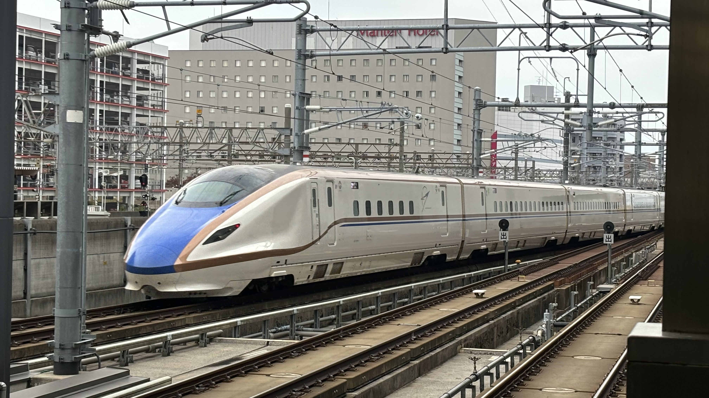

整備新幹線とは・・・
整備新幹線の概要
全国新幹線鉄道整備法（昭和４５年法律第７１号）に基づき、整備計画が定められている以下の５新幹線のことをいい、このうち、 平成９年１０月１日に北陸新幹線高崎－長野間が整備新幹線として初めて開業しました。この時点で建設中の区間は３線４区間となりました。 平成１０年１月には、政府・与党整備新幹線検討委員会において、新規着工区間として３線３区間の着工が認められました。 また、平成１２年１２月の政府与党整備新幹線検討委員会では、北陸新幹線長野－富山間や九州新幹線博多－新八代間のフル規格での整備などが決定され （平成１２年政府与党申合せ）、既に着工している区間と新たに着工する区間とを併せて、平成１３年度より３線６区間として整備を推進することとなりました。
| 路線 | 経由都市 | 総距離 |
|---|---|---|
| 北海道新幹線 | 青森市・北海道札幌市 | 約３００km |
| 東北新幹線 | 岩手県盛岡市・青森市 | 約１８０km |
| 北陸新幹線 | 東京都・大阪府 | 約６００km |
| 九州新幹線鹿児島ルート | 福岡市・鹿児島市 | 約２６０km |
| 九州新幹線長崎ルート | 福岡市・長崎市 | 約１２０km |
東海道新幹線・山陽新幹線・東北新幹線(東京〜盛岡間)、上越新幹線は国鉄時代に建設されたため、整備新幹線ではありません。
整備方式
| 方式 | 採用されている路線 | 特徴 |
|---|---|---|
| フル規格 | 東海道・山陽・九州新幹線 など | 主な区間を時速２００kmで走り、踏切を設けない直線的なルートによる方式 |
| ミニ新幹線 | 山形新幹線・秋田新幹線 | 既存の在来線を改軌して、新幹線路線と直通運転(新在直通運転)できるようにした方式 |
| スーパー特急 | 前例なし | 在来線を高架した上で、時速２００kmで走行する方式 |
路線一覧
整備計画路線
北海道新幹線
-
整備区間
新青森〜新函館北斗
-
未整備区間
新函館北斗〜札幌

北陸新幹線
-
整備区間
東京〜敦賀
-
未整備区間
敦賀〜新大阪
西九州新幹線(九州新幹線長崎ルート)
-
整備区間
武雄温泉〜長崎
-
未整備区間
新鳥栖〜武雄温泉
基本計画路線
羽越新幹線
-
経由都市
富山市〜新潟市〜山形県鶴岡市〜秋田市〜青森市
-
距離
約５６０km
奥羽新幹線
-
経由都市
福島市〜山形市〜秋田市
-
距離
約２７０km
山陰新幹線
-
経由都市
大阪市〜鳥取市〜島根県松江市〜山口県下関市
-
距離
約５５０km
四国新幹線
-
経由都市
大阪市〜香川県高松市・愛媛県松山市・徳島市・高知市〜大分市
-
距離
約４８０km
東九州新幹線
-
経由都市
福岡県北九州市〜大分市〜宮崎市〜鹿児島市
-
距離
約３９０km
機運を高めよう！！
基本計画路線を整備計画路線に格上げするには地元の熱意が必要です。日本の未来のために、また高速鉄道ネットワークの発展のためにぜひ手を挙げましょう。